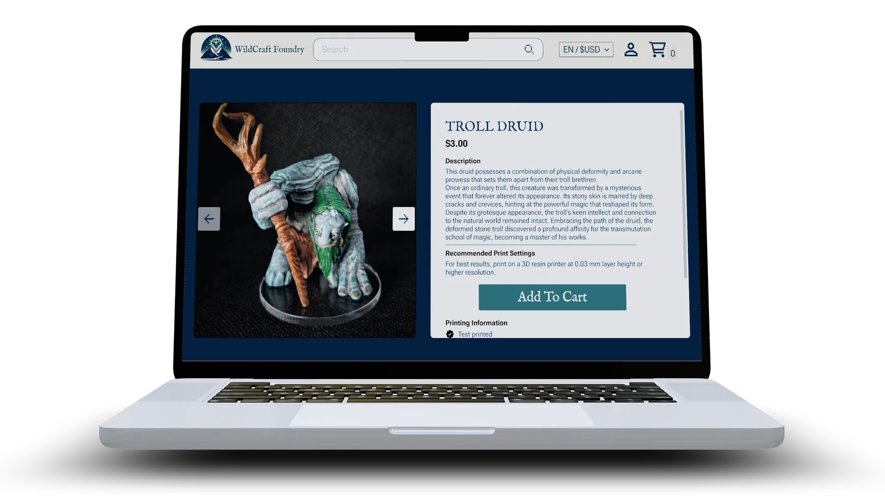
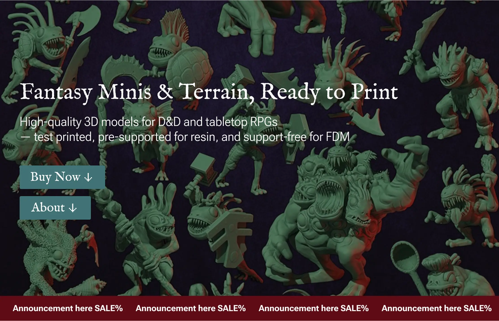
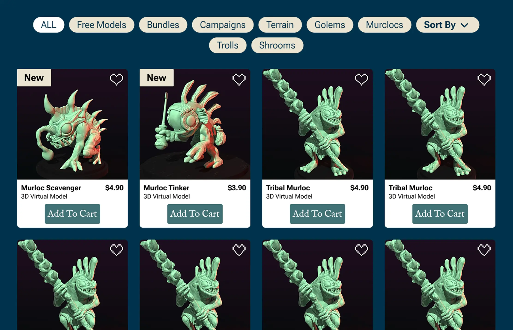
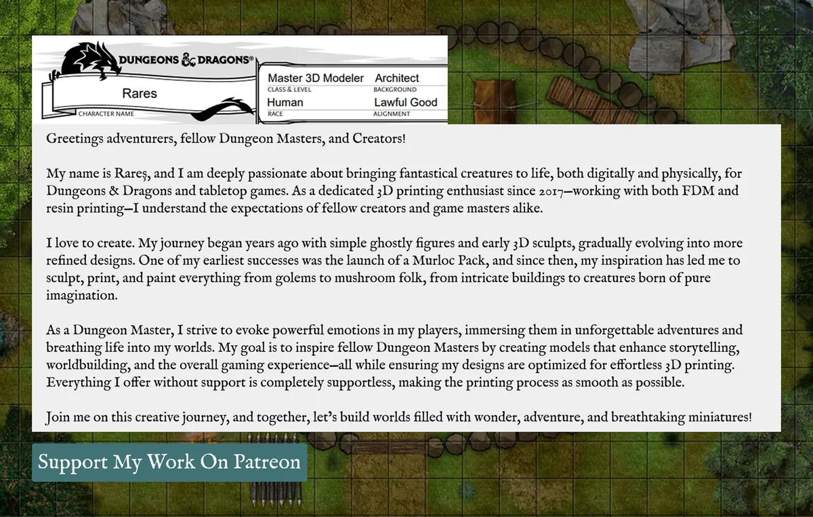

WildCraft Foundry
| E-Commerce-Plattform für 3D-Modelle
Was ich gemacht habe
- Eine E-Commerce-Plattform für 3D-Modelle für eine 3D-Künstlerin erstellt
- Umsetzung in Shopify für sichere Zahlungsabwicklung
Die Herausforderung
Die Künstlerin brauchte einen Weg, aus gelegentlichen Besucher*innen treue Patreon-Unterstützer*innen zu machen. Die Seite musste zwei sehr unterschiedliche Welten verbinden: die mittelalterliche Fantasy von Dungeons & Dragons und die High-Tech-Welt von 3D-Modellierung und -Druck.
Die Lösung
Ich gestaltete einen digitalen Raum nach dem Motto 'Tech trifft Mittelalter'. Durch individuelle Layouts, die die Hingabe und Persönlichkeit der Künstlerin hervorheben, wirkt die Seite wie eine persönliche Werkstatt statt nur ein Shop – wodurch Nutzer*innen eher bereit sind zu spenden.


